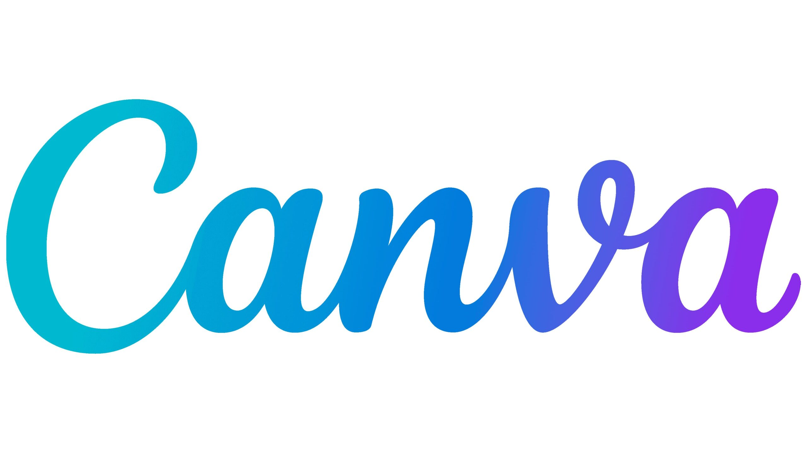

Canva
Para el desarrollo del producto final del proyecto para el Día de la Poesía, se propone al alumnado el uso de la herramienta Canva.

El objetivo principal es que el alumnado seleccione una poesía, la interprete y la transforme en un producto visual atractivo, integrando texto e imagen. Posteriormente, esos diseños se imprimirán y formarán parte de una actividad gamificada tipo yincana (las poesías se tirarán por la ventana para que caigan al patio), y allí deberán clasificar las poesías según su temática. El equipo ganador recitará las poesías que elijan y el ganador será aquel que el grupo considere que ha recitado mejor.
La elección de Canva se justifica por los siguientes motivos:
Versatilidad: permite combinar texto, imágenes, tipografías y elementos visuales de forma sencilla, lo que favorece la creatividad del alumnado.
Facilidad de uso: su interfaz es intuitiva, lo que la hace adecuada para alumnado con un nivel medio de competencia digital. Además, es una herramienta bastante frecuente y ya han trabajado con ella en otras asignaturas.
Accesibilidad: es una herramienta gratuita en su versión educativa y se puede acceder a ella desde los ordenadores del centro, y en caso de que sea necesario, desde casa con otros dispositivos como tablets o teléfonos móviles.
Adaptación al contexto: el centro dispone de conexión a Internet y cuentas educativas, por lo que es muy sencilla la implementación en el aula.
Inclusión: ofrece plantillas prediseñadas que ayudan al alumnado con más dificultades, por lo que podemos adaptar según los niveles de competencia y complejidad en la tarea.
Fomento de la competencia digital: el alumnado no solo consume contenido, sino que lo crea de forma crítica y autónoma. Tendrá que elegir y justificar los motivos de sus elecciones.
En este proyecto trabajamos tanto la competencia lingüística (comprensión y expresión oral) como la digital y artística, por lo que conseguimos integrar distintas áreas en una actividad motivadora y significativa.